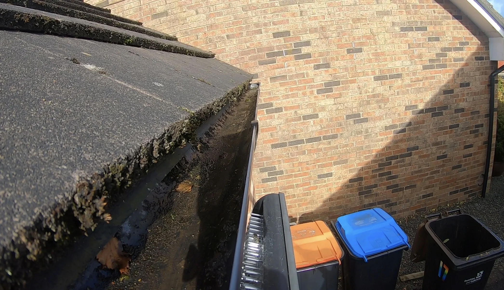
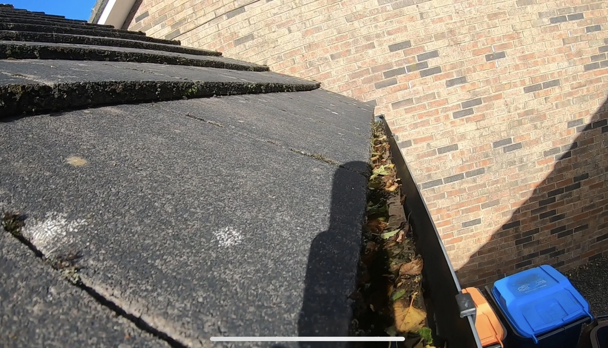
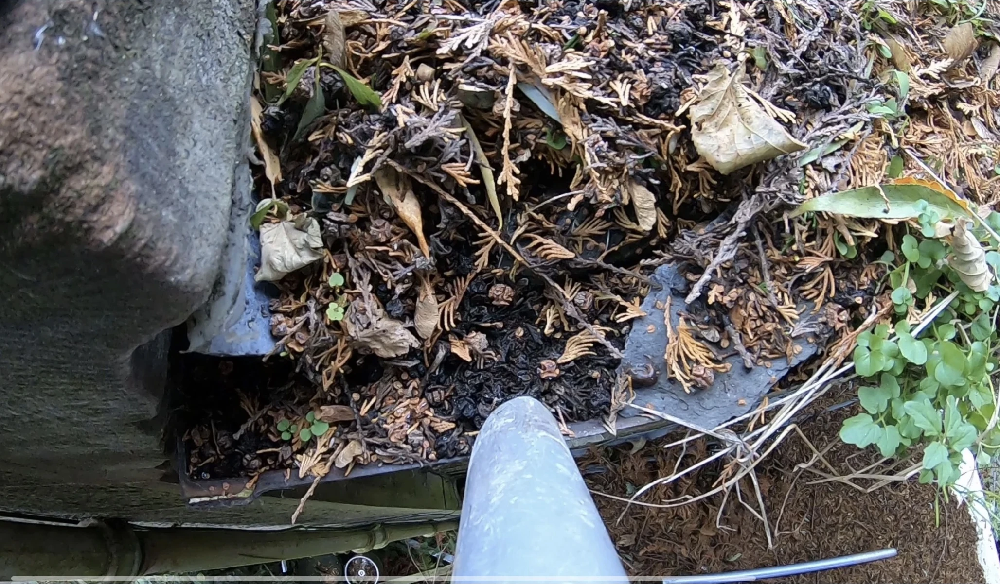
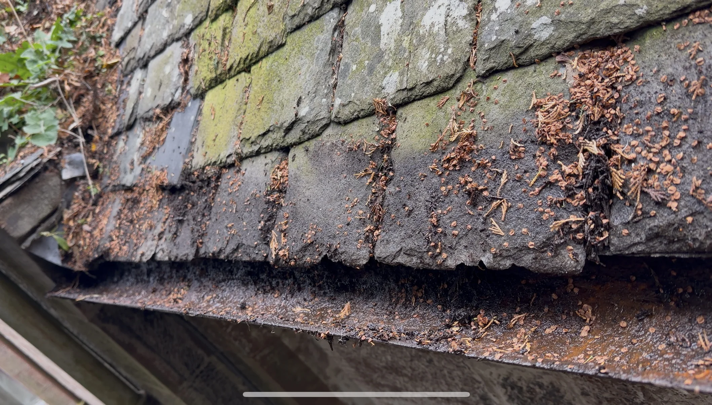
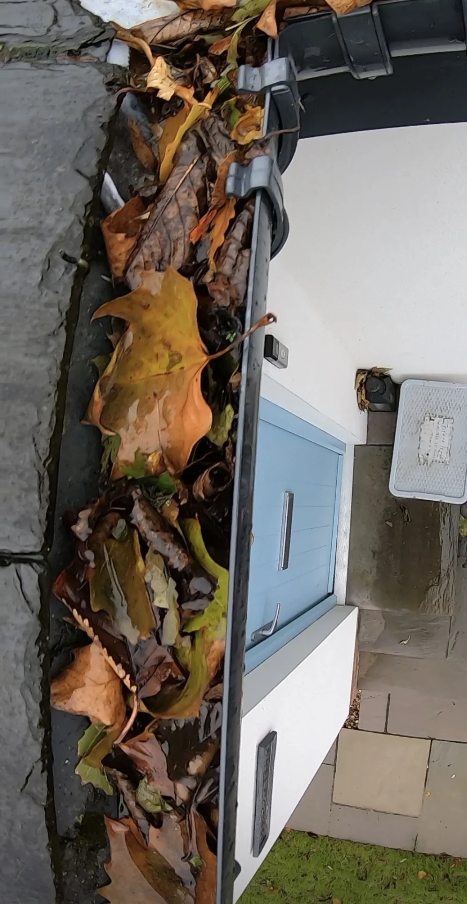
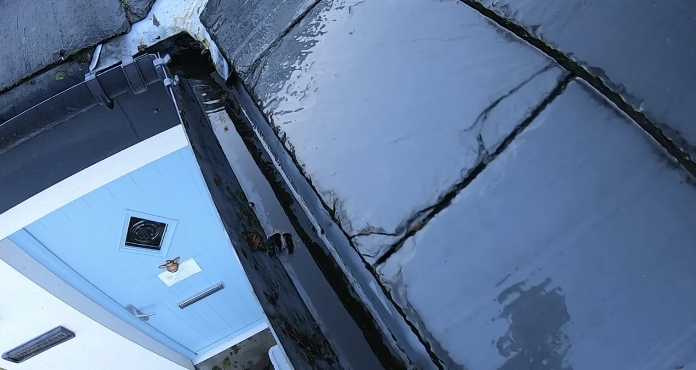
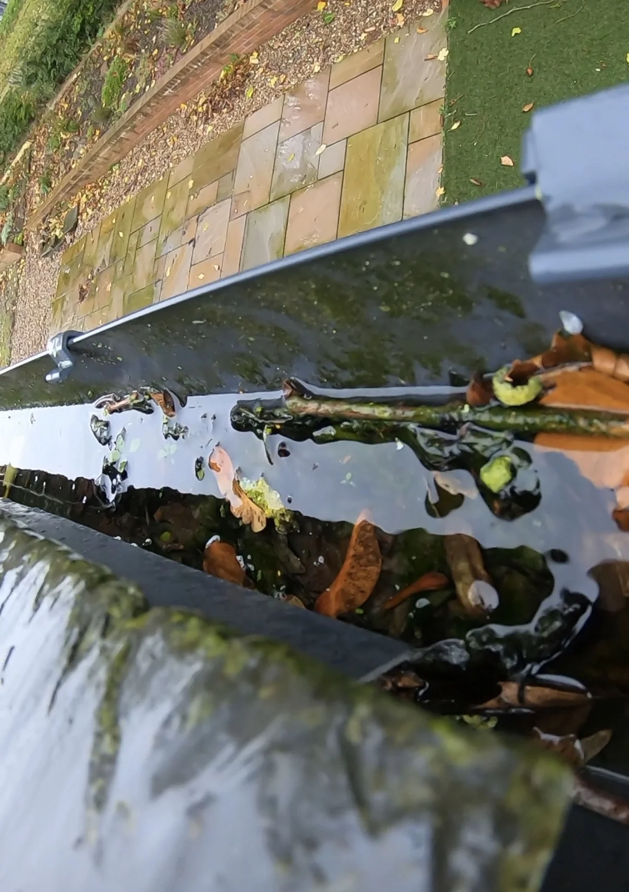
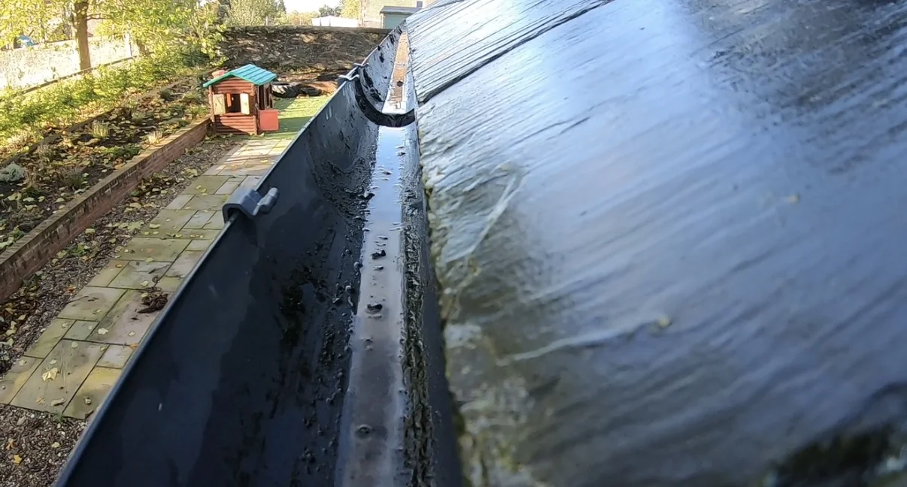
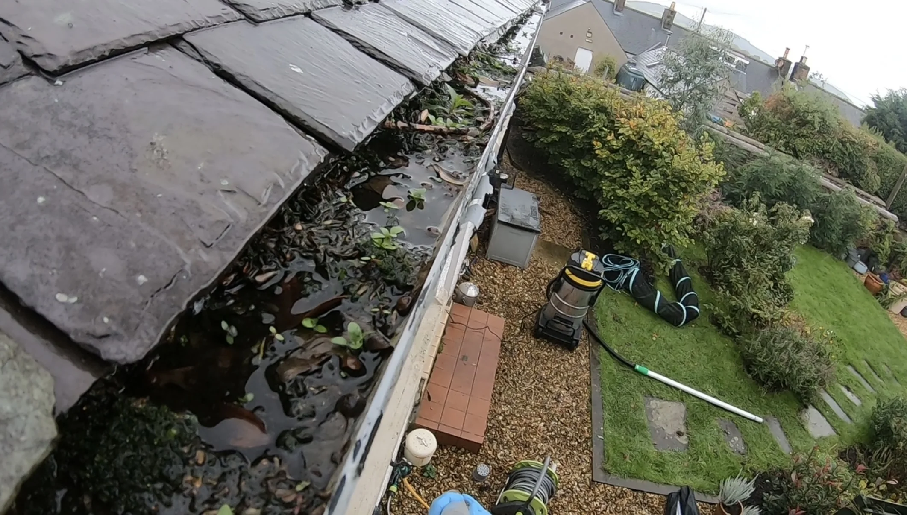
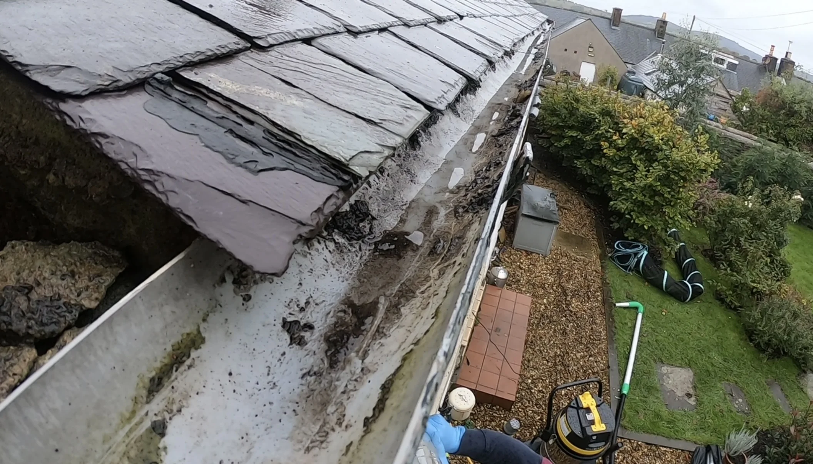

Gutter Clearing in Dumfries & Surrounding Areas
Professional gutter clearing for residential and commercial properties using a gutter vacuum system from ground level where suitable.
Join hundreds of happy customers across Dumfries & surrounding areas.
Request a Gutter Clearing QuoteProfessional Gutter Clearing
Blocked gutters can become filled with leaves, moss and built-up debris. Dumfries Bin Blasters provides residential and commercial gutter clearing across Dumfries and surrounding areas using professional gutter-vacuum equipment.
- Residential gutter clearing
- Commercial gutter clearing
- Professional gutter vacuum system
- Ground-level operation where suitable
- Leaves, moss and built-up debris removed
- Quotes based on property size, access and guttering
- Easy online quote requests
How Gutter Clearing Works
Assess
The property, access and guttering are assessed so the work required can be quoted appropriately.
Vacuum Clear
Suitable guttering is cleared using professional gutter-vacuum equipment operated from ground level.
Debris Removed
Leaves, moss and other built-up gutter debris are removed as part of the clearing process.
Gutter Clearing Before & After
See the results from gutter clearing carried out by Dumfries Bin Blasters across Dumfries and surrounding areas.
Gutter Clearing – Moss & Debris Removal


Gutter Clearing – Heavy Debris Build-Up


Gutter Clearing – Leaves & Blockages




Gutter Clearing – Before & After Results


Swipe left or right to view more gutter clearing jobs.
Why Choose Dumfries Bin Blasters?
Local Independent Business
A local independent exterior cleaning service covering Dumfries and surrounding communities.
Professional Equipment
Professional gutter-vacuum equipment allows suitable guttering to be cleared safely from ground level.
Trusted by Local Customers
Proudly rated 5★ on Google and trusted by residential and commercial customers.
Gutter Clearing Areas
Gutter clearing is available across Dumfries and selected surrounding areas.
- Dumfries & Surrounding Areas
- Lockerbie
- Lochmaben
- Thornhill
- Hightae
Not listed? Get in touch — I may still cover your area.
Gutter Clearing FAQs
How are the gutters cleared?
A professional gutter vacuum system is used from ground level where suitable to remove leaves, moss and other built-up debris.
How much does gutter clearing cost?
Quotes are based on property size, access and the amount of guttering that needs to be cleared.
Do you clear commercial gutters?
Yes. Residential and commercial gutter-clearing enquiries are welcome.
Need Your Gutters Cleared?
Join hundreds of happy customers across Dumfries & surrounding areas.
Request a no-obligation gutter clearing quote through the Dumfries Bin Blasters Booking Hub.
Request a Gutter Clearing Quote Back to Main Website